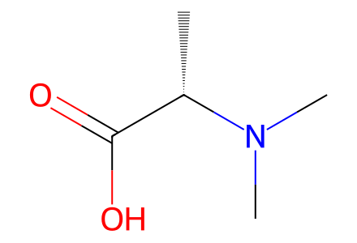
C[C@@H](C(=O)O)N(C)C70 molecular records, 26 events, 57 operation records and 5 paths. Source tautomers, partial-sample yields and unisolated stages remain explicit. Independent review pending.
完整 JSON · 逐步 CSV · 路线序列 · SDF · HRMS 核对
| 事件 | 分子连接 | 报告产率 | Canonical reaction SMILES |
|---|---|---|---|
| E01 | S1 + formaldehyde → S2 | S2: 76% | C=O.COC(=O)c1nc([C@H](C)NC(=O)OCc2ccccc2)oc1C>>COC(=O)c1nc([C@H](C)[NH+](C)C)oc1C.[Cl-] |
| E02 | S2 → 7 | not reported | COC(=O)c1nc([C@H](C)[NH+](C)C)oc1C.[Cl-]>>Cc1oc([C@H](C)[NH+](C)C)nc1C(=O)O.[Cl-] |
| E03 | S3 + dimethylalanine → S4 | S4: 41% | C[C@@H](C(=O)O)N(C)C.C[C@H](O)[C@H]([NH3+])C(=O)OCc1ccccc1.[Cl-]>>C[C@H](O)[C@H](NC(=O)[C@H](C)N(C)C)C(=O)OCc1ccccc1 |
| E04 | S4 → S5 | S5: 68% | C[C@H](O)[C@H](NC(=O)[C@H](C)N(C)C)C(=O)OCc1ccccc1>>C[C@H]1OC([C@H](C)N(C)C)=N[C@@H]1C(=O)OCc1ccccc1 |
| E05 | S5 → 14a | not reported | C[C@H]1OC([C@H](C)N(C)C)=N[C@@H]1C(=O)OCc1ccccc1>>C[C@H]1OC([C@H](C)N(C)C)=N[C@@H]1C(=O)O |
| E06 | S3 + S6 → S7 | S7: 77% | CN(C)C(C)(C)C(=O)O.C[C@H](O)[C@H]([NH3+])C(=O)OCc1ccccc1.[Cl-]>>C[C@H](O)[C@H](NC(=O)C(C)(C)N(C)C)C(=O)OCc1ccccc1 |
| E07 | S7 → S8 | S8: 89% | C[C@H](O)[C@H](NC(=O)C(C)(C)N(C)C)C(=O)OCc1ccccc1>>C[C@H]1OC(C(C)(C)N(C)C)=N[C@@H]1C(=O)OCc1ccccc1 |
| E08 | S8 → 14b | not reported | C[C@H]1OC(C(C)(C)N(C)C)=N[C@@H]1C(=O)OCc1ccccc1>>C[C@H]1OC(C(C)(C)N(C)C)=N[C@@H]1C(=O)O |
| E09 | S9 + benzyl-bromide + TBSCl → S10 | S10: 75% | BrCc1ccccc1.CC(C)(C)[Si](C)(C)Cl.CC(C)[C@H](O)C(=O)O>>CC(C)[C@H](O[Si](C)(C)C(C)(C)C)C(=O)OCc1ccccc1 |
| E10 | S10 + allyl-potassium-malonate → 10 | 10: 61% | C=CCOC(=O)CC(=O)[O-].CC(C)[C@H](O[Si](C)(C)C(C)(C)C)C(=O)OCc1ccccc1.[K+]>>C=CCOC(=O)CC(=O)[C@@H](O[Si](C)(C)C(C)(C)C)C(C)C |
| E11 | 10 + NapOH → 11 | 11: 72% | C=CCOC(=O)CC(=O)[C@@H](O[Si](C)(C)C(C)(C)C)C(C)C.OCc1ccc2ccccc2c1>>CC(C)[C@H](O[Si](C)(C)C(C)(C)C)/C(=C/C(=O)O)OCc1ccc2ccccc2c1 |
| E12 | 11 + 12a → 9a | 9a: 82% | CC(C)[C@H](O[Si](C)(C)C(C)(C)C)/C(=C/C(=O)O)OCc1ccc2ccccc2c1.C[NH2+][C@@H](C)C(=O)OC.[Cl-]>>COC(=O)[C@H](C)N(C)C(=O)/C=C(\OCc1ccc2ccccc2c1)[C@@H](O)C(C)C |
| E13 | 11 + 12b → 9b | 9b: 71% | CC(C)[C@H](O[Si](C)(C)C(C)(C)C)/C(=C/C(=O)O)OCc1ccc2ccccc2c1.C[NH2+]C(C)(C)C(=O)OC.[Cl-]>>COC(=O)C(C)(C)N(C)C(=O)/C=C(\OCc1ccc2ccccc2c1)[C@@H](O)C(C)C |
| E14 | S11 + dimethoxypropane → 8 | quantitative over two steps | C=CCOC(=O)C(C)(C)[C@@H](O)[C@H](CCCN(OCc1ccccc1)C(=O)OCc1ccccc1)NC(=O)OC(C)(C)C.COC(C)(C)OC>>CC(C)(C)OC(=O)N1[C@@H](CCCN(OCc2ccccc2)C(=O)OCc2ccccc2)[C@@H](C(C)(C)C(=O)O)OC1(C)C |
| E15 | 8 + 9a → 13a | 13a: 78% | CC(C)(C)OC(=O)N1[C@@H](CCCN(OCc2ccccc2)C(=O)OCc2ccccc2)[C@@H](C(C)(C)C(=O)O)OC1(C)C.COC(=O)[C@H](C)N(C)C(=O)/C=C(\OCc1ccc2ccccc2c1)[C@@H](O)C(C)C>>COC(=O)[C@H](C)N(C)C(=O)/C=C(\OCc1ccc2ccccc2c1)[C@@H](OC(=O)C(C)(C)[C@H]1OC(C)(C)N(C(=O)OC(C)(C)C)[C@H]1CCCN(OCc1ccccc1)C(=O)OCc1ccccc1)C(C)C |
| E16 | 8 + 9b → 13b | 13b: 73% | CC(C)(C)OC(=O)N1[C@@H](CCCN(OCc2ccccc2)C(=O)OCc2ccccc2)[C@@H](C(C)(C)C(=O)O)OC1(C)C.COC(=O)C(C)(C)N(C)C(=O)/C=C(\OCc1ccc2ccccc2c1)[C@@H](O)C(C)C>>COC(=O)C(C)(C)N(C)C(=O)/C=C(\OCc1ccc2ccccc2c1)[C@@H](OC(=O)C(C)(C)[C@H]1OC(C)(C)N(C(=O)OC(C)(C)C)[C@H]1CCCN(OCc1ccccc1)C(=O)OCc1ccccc1)C(C)C |
| E17 | 13a + 7 + acetic-anhydride → 6a | 6a: 54% | CC(=O)OC(C)=O.COC(=O)[C@H](C)N(C)C(=O)/C=C(\OCc1ccc2ccccc2c1)[C@@H](OC(=O)C(C)(C)[C@H]1OC(C)(C)N(C(=O)OC(C)(C)C)[C@H]1CCCN(OCc1ccccc1)C(=O)OCc1ccccc1)C(C)C.Cc1oc([C@H](C)[NH+](C)C)nc1C(=O)O.[Cl-]>>COC(=O)[C@H](C)N(C)C(=O)/C=C(\OCc1ccc2ccccc2c1)[C@@H](OC(=O)C(C)(C)[C@H](OC(C)=O)[C@H](CCCN(OCc1ccccc1)C(=O)OCc1ccccc1)NC(=O)c1nc([C@H](C)N(C)C)oc1C)C(C)C |
| E18 | 13b + 7 + acetic-anhydride → 6b | 6b: 52% | CC(=O)OC(C)=O.COC(=O)C(C)(C)N(C)C(=O)/C=C(\OCc1ccc2ccccc2c1)[C@@H](OC(=O)C(C)(C)[C@H]1OC(C)(C)N(C(=O)OC(C)(C)C)[C@H]1CCCN(OCc1ccccc1)C(=O)OCc1ccccc1)C(C)C.Cc1oc([C@H](C)[NH+](C)C)nc1C(=O)O.[Cl-]>>COC(=O)C(C)(C)N(C)C(=O)/C=C(\OCc1ccc2ccccc2c1)[C@@H](OC(=O)C(C)(C)[C@H](OC(C)=O)[C@H](CCCN(OCc1ccccc1)C(=O)OCc1ccccc1)NC(=O)c1nc([C@H](C)N(C)C)oc1C)C(C)C |
| E19 | 13a + 14a + acetic-anhydride → 15a | 15a: 40% | CC(=O)OC(C)=O.COC(=O)[C@H](C)N(C)C(=O)/C=C(\OCc1ccc2ccccc2c1)[C@@H](OC(=O)C(C)(C)[C@H]1OC(C)(C)N(C(=O)OC(C)(C)C)[C@H]1CCCN(OCc1ccccc1)C(=O)OCc1ccccc1)C(C)C.C[C@H]1OC([C@H](C)N(C)C)=N[C@@H]1C(=O)O>>COC(=O)[C@H](C)N(C)C(=O)/C=C(\OCc1ccc2ccccc2c1)[C@@H](OC(=O)C(C)(C)[C@H](OC(C)=O)[C@H](CCCN(OCc1ccccc1)C(=O)OCc1ccccc1)NC(=O)[C@H]1N=C([C@H](C)N(C)C)O[C@@H]1C)C(C)C |
| E20 | 13b + 14a + acetic-anhydride → 15b | 15b: 54% | CC(=O)OC(C)=O.COC(=O)C(C)(C)N(C)C(=O)/C=C(\OCc1ccc2ccccc2c1)[C@@H](OC(=O)C(C)(C)[C@H]1OC(C)(C)N(C(=O)OC(C)(C)C)[C@H]1CCCN(OCc1ccccc1)C(=O)OCc1ccccc1)C(C)C.C[C@H]1OC([C@H](C)N(C)C)=N[C@@H]1C(=O)O>>COC(=O)C(C)(C)N(C)C(=O)/C=C(\OCc1ccc2ccccc2c1)[C@@H](OC(=O)C(C)(C)[C@H](OC(C)=O)[C@H](CCCN(OCc1ccccc1)C(=O)OCc1ccccc1)NC(=O)[C@H]1N=C([C@H](C)N(C)C)O[C@@H]1C)C(C)C |
| E21 | 13a + 14b + acetic-anhydride → 15c | 15c: 55% | CC(=O)OC(C)=O.COC(=O)[C@H](C)N(C)C(=O)/C=C(\OCc1ccc2ccccc2c1)[C@@H](OC(=O)C(C)(C)[C@H]1OC(C)(C)N(C(=O)OC(C)(C)C)[C@H]1CCCN(OCc1ccccc1)C(=O)OCc1ccccc1)C(C)C.C[C@H]1OC(C(C)(C)N(C)C)=N[C@@H]1C(=O)O>>COC(=O)[C@H](C)N(C)C(=O)/C=C(\OCc1ccc2ccccc2c1)[C@@H](OC(=O)C(C)(C)[C@H](OC(C)=O)[C@H](CCCN(OCc1ccccc1)C(=O)OCc1ccccc1)NC(=O)[C@H]1N=C(C(C)(C)N(C)C)O[C@@H]1C)C(C)C |
| E22 | 6a + butyl-nitrite → 5a | 5a: 5% | CCCCON=O.COC(=O)[C@H](C)N(C)C(=O)/C=C(\OCc1ccc2ccccc2c1)[C@@H](OC(=O)C(C)(C)[C@H](OC(C)=O)[C@H](CCCN(OCc1ccccc1)C(=O)OCc1ccccc1)NC(=O)c1nc([C@H](C)N(C)C)oc1C)C(C)C>>CC(=O)O[C@H]([C@H](CCCN(O)N=O)NC(=O)c1nc([C@H](C)N(C)C)oc1C)C(C)(C)C(=O)O[C@H](C(=O)C1=C(O)[C@H](C)N(C)C1=O)C(C)C |
| E23 | 6b + butyl-nitrite → 5b | 5b: 26% | CCCCON=O.COC(=O)C(C)(C)N(C)C(=O)/C=C(\OCc1ccc2ccccc2c1)[C@@H](OC(=O)C(C)(C)[C@H](OC(C)=O)[C@H](CCCN(OCc1ccccc1)C(=O)OCc1ccccc1)NC(=O)c1nc([C@H](C)N(C)C)oc1C)C(C)C>>CC(=O)O[C@H]([C@H](CCCN(O)N=O)NC(=O)c1nc([C@H](C)N(C)C)oc1C)C(C)(C)C(=O)O[C@H](C(=O)C1=C(O)C(C)(C)N(C)C1=O)C(C)C |
| E24 | 15a + butyl-nitrite → 1a | 1a: 14% | CCCCON=O.COC(=O)[C@H](C)N(C)C(=O)/C=C(\OCc1ccc2ccccc2c1)[C@@H](OC(=O)C(C)(C)[C@H](OC(C)=O)[C@H](CCCN(OCc1ccccc1)C(=O)OCc1ccccc1)NC(=O)[C@H]1N=C([C@H](C)N(C)C)O[C@@H]1C)C(C)C>>CC(=O)O[C@H]([C@H](CCCN(O)N=O)NC(=O)[C@H]1N=C([C@H](C)N(C)C)O[C@@H]1C)C(C)(C)C(=O)O[C@H](C(=O)C1=C(O)[C@H](C)N(C)C1=O)C(C)C |
| E25 | 15b + butyl-nitrite → 1b | 1b: 17% | CCCCON=O.COC(=O)C(C)(C)N(C)C(=O)/C=C(\OCc1ccc2ccccc2c1)[C@@H](OC(=O)C(C)(C)[C@H](OC(C)=O)[C@H](CCCN(OCc1ccccc1)C(=O)OCc1ccccc1)NC(=O)[C@H]1N=C([C@H](C)N(C)C)O[C@@H]1C)C(C)C>>CC(=O)O[C@H]([C@H](CCCN(O)N=O)NC(=O)[C@H]1N=C([C@H](C)N(C)C)O[C@@H]1C)C(C)(C)C(=O)O[C@H](C(=O)C1=C(O)C(C)(C)N(C)C1=O)C(C)C |
| E26 | 15c + butyl-nitrite → 1c | 1c: 20% | CCCCON=O.COC(=O)[C@H](C)N(C)C(=O)/C=C(\OCc1ccc2ccccc2c1)[C@@H](OC(=O)C(C)(C)[C@H](OC(C)=O)[C@H](CCCN(OCc1ccccc1)C(=O)OCc1ccccc1)NC(=O)[C@H]1N=C(C(C)(C)N(C)C)O[C@@H]1C)C(C)C>>CC(=O)O[C@H]([C@H](CCCN(O)N=O)NC(=O)[C@H]1N=C(C(C)(C)N(C)C)O[C@@H]1C)C(C)(C)C(=O)O[C@H](C(=O)C1=C(O)[C@H](C)N(C)C1=O)C(C)C |

C[C@@H](C(=O)O)N(C)C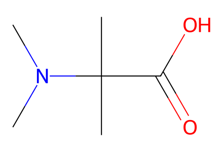
CN(C)C(C)(C)C(=O)O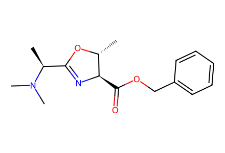
C[C@H]1OC([C@H](C)N(C)C)=N[C@@H]1C(=O)OCc1ccccc1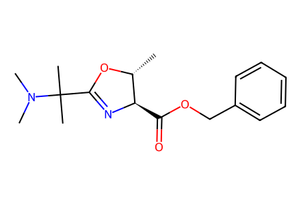
C[C@H]1OC(C(C)(C)N(C)C)=N[C@@H]1C(=O)OCc1ccccc1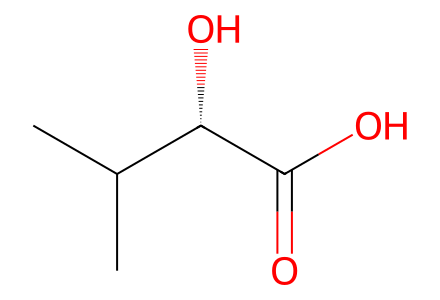
CC(C)[C@H](O)C(=O)O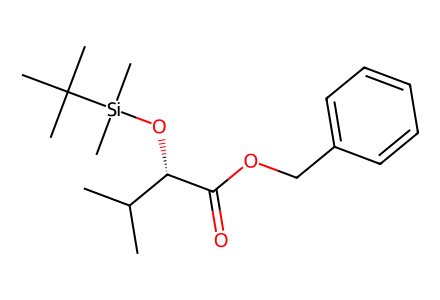
CC(C)[C@H](O[Si](C)(C)C(C)(C)C)C(=O)OCc1ccccc1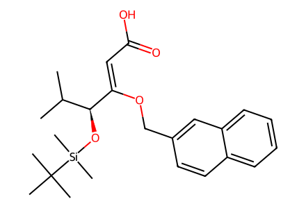
CC(C)[C@H](O[Si](C)(C)C(C)(C)C)/C(=C/C(=O)O)OCc1ccc2ccccc2c1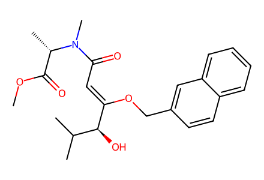
COC(=O)[C@H](C)N(C)C(=O)/C=C(\OCc1ccc2ccccc2c1)[C@@H](O)C(C)C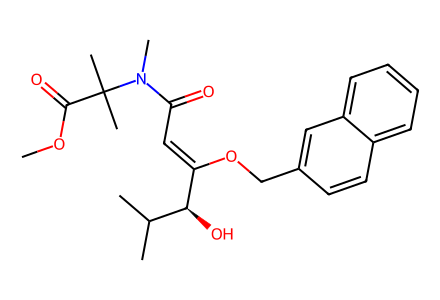
COC(=O)C(C)(C)N(C)C(=O)/C=C(\OCc1ccc2ccccc2c1)[C@@H](O)C(C)C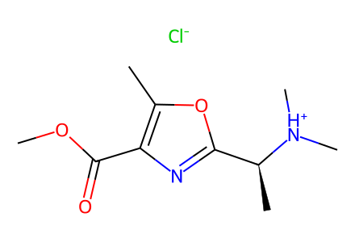
COC(=O)c1nc([C@H](C)[NH+](C)C)oc1C.[Cl-]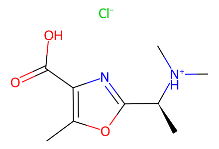
Cc1oc([C@H](C)[NH+](C)C)nc1C(=O)O.[Cl-]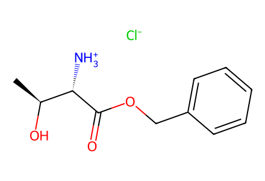
C[C@H](O)[C@H]([NH3+])C(=O)OCc1ccccc1.[Cl-]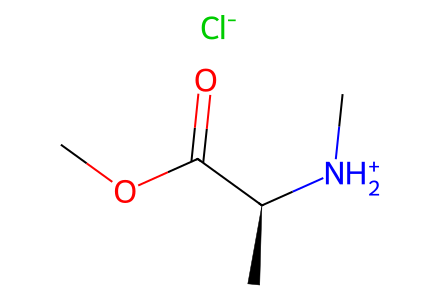
C[NH2+][C@@H](C)C(=O)OC.[Cl-]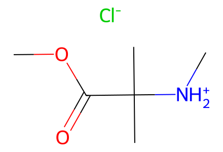
C[NH2+]C(C)(C)C(=O)OC.[Cl-]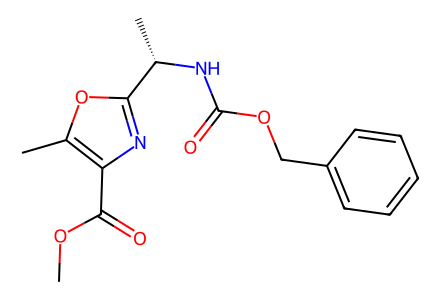
COC(=O)c1nc([C@H](C)NC(=O)OCc2ccccc2)oc1C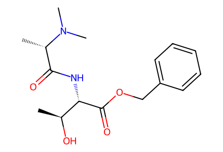
C[C@H](O)[C@H](NC(=O)[C@H](C)N(C)C)C(=O)OCc1ccccc1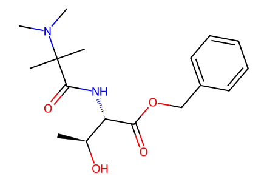
C[C@H](O)[C@H](NC(=O)C(C)(C)N(C)C)C(=O)OCc1ccccc1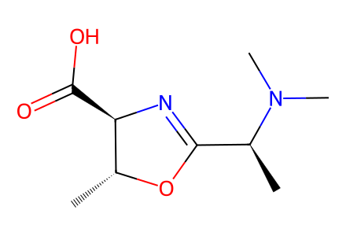
C[C@H]1OC([C@H](C)N(C)C)=N[C@@H]1C(=O)O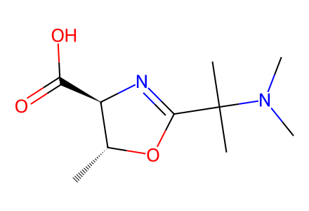
C[C@H]1OC(C(C)(C)N(C)C)=N[C@@H]1C(=O)O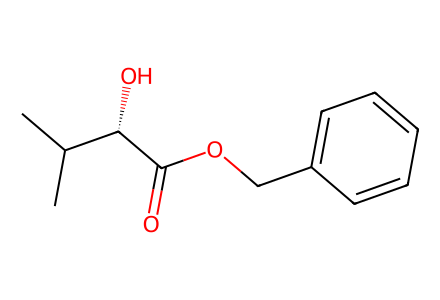
CC(C)[C@H](O)C(=O)OCc1ccccc1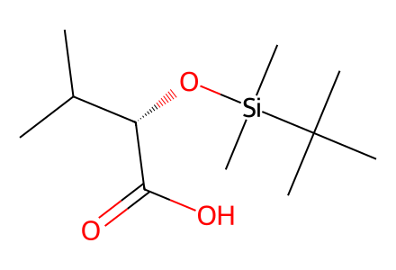
CC(C)[C@H](O[Si](C)(C)C(C)(C)C)C(=O)O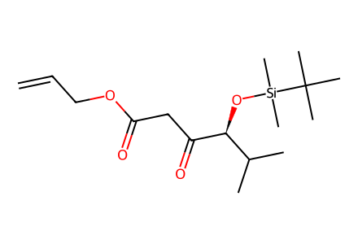
C=CCOC(=O)CC(=O)[C@@H](O[Si](C)(C)C(C)(C)C)C(C)C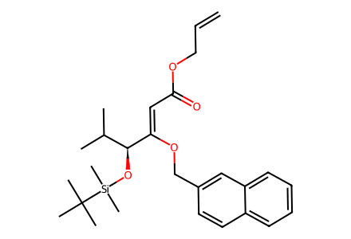
C=CCOC(=O)/C=C(\OCc1ccc2ccccc2c1)[C@@H](O[Si](C)(C)C(C)(C)C)C(C)C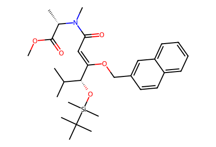
COC(=O)[C@H](C)N(C)C(=O)/C=C(\OCc1ccc2ccccc2c1)[C@H](O[Si](C)(C)C(C)(C)C)C(C)C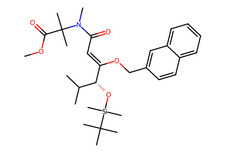
COC(=O)C(C)(C)N(C)C(=O)/C=C(\OCc1ccc2ccccc2c1)[C@H](O[Si](C)(C)C(C)(C)C)C(C)C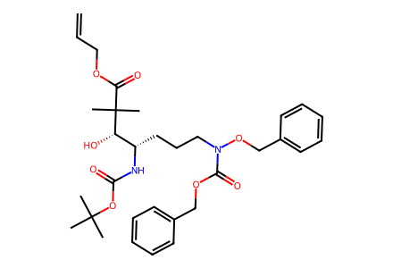
C=CCOC(=O)C(C)(C)[C@@H](O)[C@H](CCCN(OCc1ccccc1)C(=O)OCc1ccccc1)NC(=O)OC(C)(C)C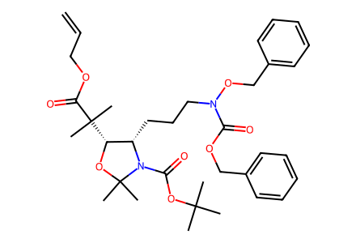
C=CCOC(=O)C(C)(C)[C@H]1OC(C)(C)N(C(=O)OC(C)(C)C)[C@H]1CCCN(OCc1ccccc1)C(=O)OCc1ccccc1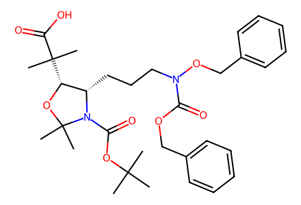
CC(C)(C)OC(=O)N1[C@@H](CCCN(OCc2ccccc2)C(=O)OCc2ccccc2)[C@@H](C(C)(C)C(=O)O)OC1(C)C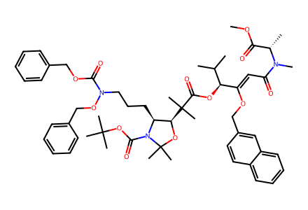
COC(=O)[C@H](C)N(C)C(=O)/C=C(\OCc1ccc2ccccc2c1)[C@@H](OC(=O)C(C)(C)[C@H]1OC(C)(C)N(C(=O)OC(C)(C)C)[C@H]1CCCN(OCc1ccccc1)C(=O)OCc1ccccc1)C(C)C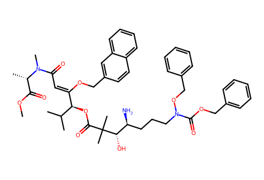
COC(=O)[C@H](C)N(C)C(=O)/C=C(\OCc1ccc2ccccc2c1)[C@@H](OC(=O)C(C)(C)[C@@H](O)[C@@H](N)CCCN(OCc1ccccc1)C(=O)OCc1ccccc1)C(C)C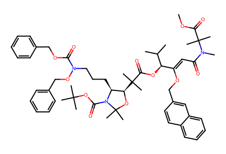
COC(=O)C(C)(C)N(C)C(=O)/C=C(\OCc1ccc2ccccc2c1)[C@@H](OC(=O)C(C)(C)[C@H]1OC(C)(C)N(C(=O)OC(C)(C)C)[C@H]1CCCN(OCc1ccccc1)C(=O)OCc1ccccc1)C(C)C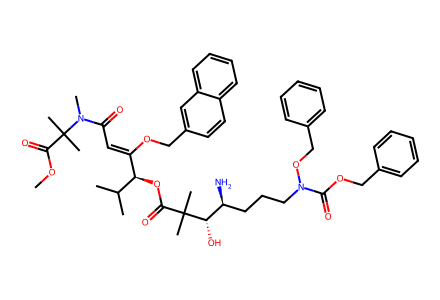
COC(=O)C(C)(C)N(C)C(=O)/C=C(\OCc1ccc2ccccc2c1)[C@@H](OC(=O)C(C)(C)[C@@H](O)[C@@H](N)CCCN(OCc1ccccc1)C(=O)OCc1ccccc1)C(C)C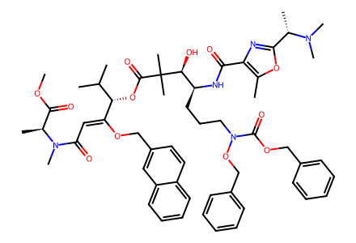
COC(=O)[C@H](C)N(C)C(=O)/C=C(\OCc1ccc2ccccc2c1)[C@@H](OC(=O)C(C)(C)[C@@H](O)[C@H](CCCN(OCc1ccccc1)C(=O)OCc1ccccc1)NC(=O)c1nc([C@H](C)N(C)C)oc1C)C(C)C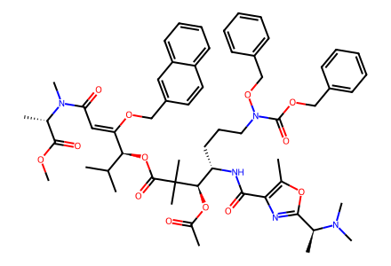
COC(=O)[C@H](C)N(C)C(=O)/C=C(\OCc1ccc2ccccc2c1)[C@@H](OC(=O)C(C)(C)[C@H](OC(C)=O)[C@H](CCCN(OCc1ccccc1)C(=O)OCc1ccccc1)NC(=O)c1nc([C@H](C)N(C)C)oc1C)C(C)C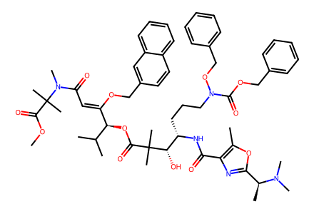
COC(=O)C(C)(C)N(C)C(=O)/C=C(\OCc1ccc2ccccc2c1)[C@@H](OC(=O)C(C)(C)[C@@H](O)[C@H](CCCN(OCc1ccccc1)C(=O)OCc1ccccc1)NC(=O)c1nc([C@H](C)N(C)C)oc1C)C(C)C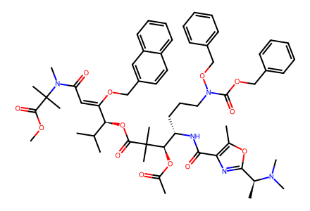
COC(=O)C(C)(C)N(C)C(=O)/C=C(\OCc1ccc2ccccc2c1)[C@@H](OC(=O)C(C)(C)[C@H](OC(C)=O)[C@H](CCCN(OCc1ccccc1)C(=O)OCc1ccccc1)NC(=O)c1nc([C@H](C)N(C)C)oc1C)C(C)C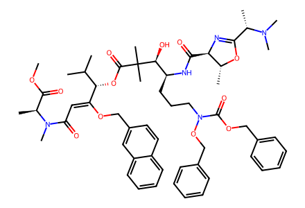
COC(=O)[C@H](C)N(C)C(=O)/C=C(\OCc1ccc2ccccc2c1)[C@@H](OC(=O)C(C)(C)[C@@H](O)[C@H](CCCN(OCc1ccccc1)C(=O)OCc1ccccc1)NC(=O)[C@H]1N=C([C@H](C)N(C)C)O[C@@H]1C)C(C)C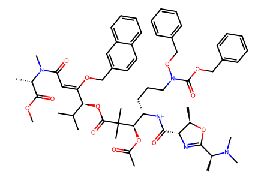
COC(=O)[C@H](C)N(C)C(=O)/C=C(\OCc1ccc2ccccc2c1)[C@@H](OC(=O)C(C)(C)[C@H](OC(C)=O)[C@H](CCCN(OCc1ccccc1)C(=O)OCc1ccccc1)NC(=O)[C@H]1N=C([C@H](C)N(C)C)O[C@@H]1C)C(C)C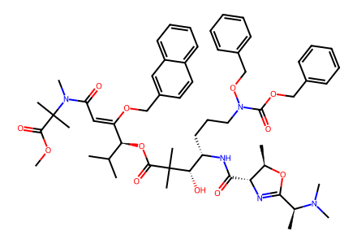
COC(=O)C(C)(C)N(C)C(=O)/C=C(\OCc1ccc2ccccc2c1)[C@@H](OC(=O)C(C)(C)[C@@H](O)[C@H](CCCN(OCc1ccccc1)C(=O)OCc1ccccc1)NC(=O)[C@H]1N=C([C@H](C)N(C)C)O[C@@H]1C)C(C)C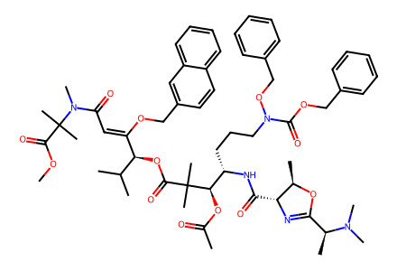
COC(=O)C(C)(C)N(C)C(=O)/C=C(\OCc1ccc2ccccc2c1)[C@@H](OC(=O)C(C)(C)[C@H](OC(C)=O)[C@H](CCCN(OCc1ccccc1)C(=O)OCc1ccccc1)NC(=O)[C@H]1N=C([C@H](C)N(C)C)O[C@@H]1C)C(C)C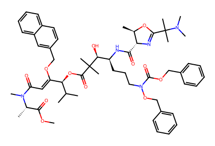
COC(=O)[C@H](C)N(C)C(=O)/C=C(\OCc1ccc2ccccc2c1)[C@@H](OC(=O)C(C)(C)[C@@H](O)[C@H](CCCN(OCc1ccccc1)C(=O)OCc1ccccc1)NC(=O)[C@H]1N=C(C(C)(C)N(C)C)O[C@@H]1C)C(C)C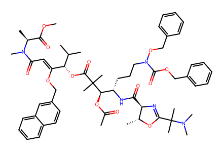
COC(=O)[C@H](C)N(C)C(=O)/C=C(\OCc1ccc2ccccc2c1)[C@@H](OC(=O)C(C)(C)[C@H](OC(C)=O)[C@H](CCCN(OCc1ccccc1)C(=O)OCc1ccccc1)NC(=O)[C@H]1N=C(C(C)(C)N(C)C)O[C@@H]1C)C(C)C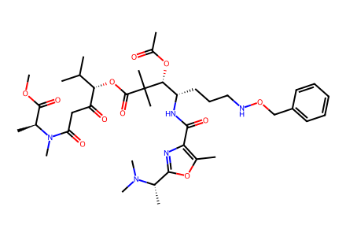
COC(=O)[C@H](C)N(C)C(=O)CC(=O)[C@@H](OC(=O)C(C)(C)[C@H](OC(C)=O)[C@H](CCCNOCc1ccccc1)NC(=O)c1nc([C@H](C)N(C)C)oc1C)C(C)CCC(=O)O[C@H]([C@H](CCCNOCc1ccccc1)NC(=O)c1nc([C@H](C)N(C)C)oc1C)C(C)(C)C(=O)O[C@H](C(=O)C1=C(O)[C@H](C)N(C)C1=O)C(C)C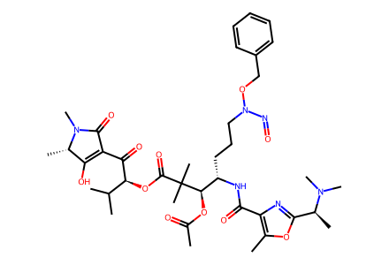
CC(=O)O[C@H]([C@H](CCCN(N=O)OCc1ccccc1)NC(=O)c1nc([C@H](C)N(C)C)oc1C)C(C)(C)C(=O)O[C@H](C(=O)C1=C(O)[C@H](C)N(C)C1=O)C(C)C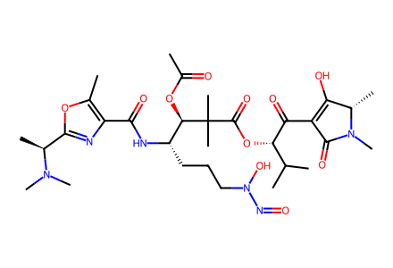
CC(=O)O[C@H]([C@H](CCCN(O)N=O)NC(=O)c1nc([C@H](C)N(C)C)oc1C)C(C)(C)C(=O)O[C@H](C(=O)C1=C(O)[C@H](C)N(C)C1=O)C(C)C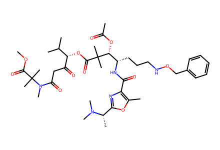
COC(=O)C(C)(C)N(C)C(=O)CC(=O)[C@@H](OC(=O)C(C)(C)[C@H](OC(C)=O)[C@H](CCCNOCc1ccccc1)NC(=O)c1nc([C@H](C)N(C)C)oc1C)C(C)C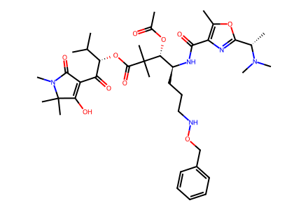
CC(=O)O[C@H]([C@H](CCCNOCc1ccccc1)NC(=O)c1nc([C@H](C)N(C)C)oc1C)C(C)(C)C(=O)O[C@H](C(=O)C1=C(O)C(C)(C)N(C)C1=O)C(C)C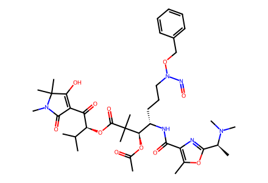
CC(=O)O[C@H]([C@H](CCCN(N=O)OCc1ccccc1)NC(=O)c1nc([C@H](C)N(C)C)oc1C)C(C)(C)C(=O)O[C@H](C(=O)C1=C(O)C(C)(C)N(C)C1=O)C(C)C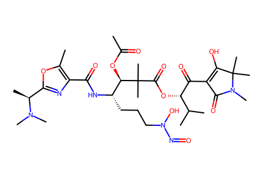
CC(=O)O[C@H]([C@H](CCCN(O)N=O)NC(=O)c1nc([C@H](C)N(C)C)oc1C)C(C)(C)C(=O)O[C@H](C(=O)C1=C(O)C(C)(C)N(C)C1=O)C(C)C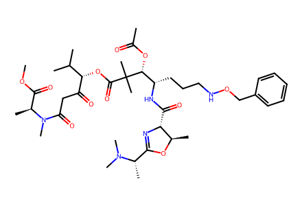
COC(=O)[C@H](C)N(C)C(=O)CC(=O)[C@@H](OC(=O)C(C)(C)[C@H](OC(C)=O)[C@H](CCCNOCc1ccccc1)NC(=O)[C@H]1N=C([C@H](C)N(C)C)O[C@@H]1C)C(C)CCC(=O)O[C@H]([C@H](CCCNOCc1ccccc1)NC(=O)[C@H]1N=C([C@H](C)N(C)C)O[C@@H]1C)C(C)(C)C(=O)O[C@H](C(=O)C1=C(O)[C@H](C)N(C)C1=O)C(C)CCC(=O)O[C@H]([C@H](CCCN(N=O)OCc1ccccc1)NC(=O)[C@H]1N=C([C@H](C)N(C)C)O[C@@H]1C)C(C)(C)C(=O)O[C@H](C(=O)C1=C(O)[C@H](C)N(C)C1=O)C(C)CCC(=O)O[C@H]([C@H](CCCN(O)N=O)NC(=O)[C@H]1N=C([C@H](C)N(C)C)O[C@@H]1C)C(C)(C)C(=O)O[C@H](C(=O)C1=C(O)[C@H](C)N(C)C1=O)C(C)CCOC(=O)C(C)(C)N(C)C(=O)CC(=O)[C@@H](OC(=O)C(C)(C)[C@H](OC(C)=O)[C@H](CCCNOCc1ccccc1)NC(=O)[C@H]1N=C([C@H](C)N(C)C)O[C@@H]1C)C(C)CCC(=O)O[C@H]([C@H](CCCNOCc1ccccc1)NC(=O)[C@H]1N=C([C@H](C)N(C)C)O[C@@H]1C)C(C)(C)C(=O)O[C@H](C(=O)C1=C(O)C(C)(C)N(C)C1=O)C(C)CCC(=O)O[C@H]([C@H](CCCN(N=O)OCc1ccccc1)NC(=O)[C@H]1N=C([C@H](C)N(C)C)O[C@@H]1C)C(C)(C)C(=O)O[C@H](C(=O)C1=C(O)C(C)(C)N(C)C1=O)C(C)CCC(=O)O[C@H]([C@H](CCCN(O)N=O)NC(=O)[C@H]1N=C([C@H](C)N(C)C)O[C@@H]1C)C(C)(C)C(=O)O[C@H](C(=O)C1=C(O)C(C)(C)N(C)C1=O)C(C)CCOC(=O)[C@H](C)N(C)C(=O)CC(=O)[C@@H](OC(=O)C(C)(C)[C@H](OC(C)=O)[C@H](CCCNOCc1ccccc1)NC(=O)[C@H]1N=C(C(C)(C)N(C)C)O[C@@H]1C)C(C)CCC(=O)O[C@H]([C@H](CCCNOCc1ccccc1)NC(=O)[C@H]1N=C(C(C)(C)N(C)C)O[C@@H]1C)C(C)(C)C(=O)O[C@H](C(=O)C1=C(O)[C@H](C)N(C)C1=O)C(C)CCC(=O)O[C@H]([C@H](CCCN(N=O)OCc1ccccc1)NC(=O)[C@H]1N=C(C(C)(C)N(C)C)O[C@@H]1C)C(C)(C)C(=O)O[C@H](C(=O)C1=C(O)[C@H](C)N(C)C1=O)C(C)CCC(=O)O[C@H]([C@H](CCCN(O)N=O)NC(=O)[C@H]1N=C(C(C)(C)N(C)C)O[C@@H]1C)C(C)(C)C(=O)O[C@H](C(=O)C1=C(O)[C@H](C)N(C)C1=O)C(C)C
C=O
BrCc1ccccc1
CC(C)(C)[Si](C)(C)ClC=CCOC(=O)CC(=O)[O-].[K+]OCc1ccc2ccccc2c1COC(C)(C)OC
CC(=O)OC(C)=OCCCCON=O